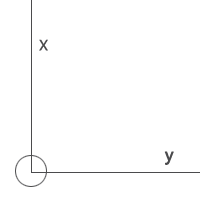

配置 (
)(
ver 3.0:2023-02-15
)
平台配置
平台对接
测量工具
船体设置
平台坐标
船头朝向
基站位置
图像类型
船体类型
无
简单模型
长度：
米
宽度：
米
参考点
X:
米
Y:
米
确定
说明：参考点是定位页面中的坐标原点，通常设置为甲板单元所在的位置。
坐标来源
RTK
固定坐标
光纤陀螺
/*xiongwen*/
坐标偏移
X:
米
Y:
米
Z:
米
经度:
纬度:
位置输出频率:
确定
说明：坐标偏移是指坐标来源点和参考点之间的偏移，如RTK天线和参考点之间的距离，坐标来源点，在右图用GPS表示。
朝向来源
内部IMU
GPS(带定向)
光纤陀螺
无(基站标志方向作为0度)
偏移角度:
安装角度偏差
偏航:
横滚:
俯仰:
安装位置偏差
X:
Y:
Z:
方向输出频率:
确定
说明：
1.安装USBL基站时，必须保证USBL基站标志的方向和船头方向一致，系统以USBL基站标志的方向作为船头朝向。
2.当朝向来源是外部来源GPS(带定向)，偏移角度指GPS方向和USBL基站方向的夹角，GPS方向到USBL基站方向，顺时针为正，逆时针为负。
3.当朝向来源是外部来源GPS(带定向),方向输出频率是指GPS的方向输出频率，请根据GPS设备实际设置的输出频率填写，设置不一致会导致水声定位不准确。
4.当朝向来源是无时，选择基站标志方向作为0度，便于做纯相对定位的应用。
基站偏移
X:
米
Y:
米
确定
说明：基站偏移是指USBL基站和参考点之间的偏移，基站在右图用USBL图标表示。
图像类型
散点
连线
确定

对接地址
开机自动运行
IP：
端口：
提示：甲板单元为TCP/IP的服务端,IP填127.0.0.1;端口不能被其他程序占用
运行消息：
对接内容
输出信标信息：
绝对位置(GGA)
相对位置
时间(ZDA)
输出通信信息：
水声数据收发
保存
运行
停止
提示：“保存”：修改配置后点击“保存”，用于保存以及生效。“运行/停止”：非自动运行情况下，用于运行/停止服务。
仅供专业人员调试使用
点1（经纬度）
°
°
点2（经纬度）
°
°
测量
原始GPS格式
°
°
转换
点1（经纬度）
°
°
点2(原始GPS格式)
°
°
偏转角计算
°
°
计算